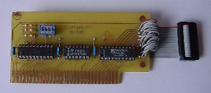

|
Tarjeta Interface Bus ISA (TIBI) |
 |
Este circuito es una interface de E/S para PC diseñada como una tarjeta ISA estándar. El diseño es lo más sencillo posible ya que únicamente consta de un comparador, un buffer, un circuito NAND, resistencias y condensadores.
El circuito no hace más que actuar como un simple buffer de entrada/salida
entre el conector externo y el bus ISA del ordenador. La tarjeta deberá
direccionarse como cualquier otra tarjeta estándar, por lo que habrá
que asignarle una dirección base de E/S. esta función se
realizará a través del dip switch que se ve en el diseño
y sus valores corresponden con los de la tabla 1.
El conector externo proporciona 8 señales de E/S (IO0 a IO7), dos
líneas de dirección (A0 y A1), una señal de habilitación
activa a nivel bajo (/ENABLE), una señal de lectura activa a nivel
bajo (/RD) y una señal de escritura activa también a nivel
bajo (/WR). Además de estas señales se tienen líneas
de alimentación de +5V y señales de tierra.
300
304
308
30C
310
314
318
31C
A
ON
OFF
ON
OFF
ON
OFF
ON
OFF
B
ON
ON
OFF
OFF
ON
ON
OFF
OFF
C
ON
ON
ON
ON
OFF
OFF
OFF
OFF
Tabla 1
Con el dip switch se selecciona el estado lógico que tendrán las señales P0, P1 y P2 del comparador. Las resistencias, actuando como resistencias de pull-up, proporcionan un nivel lógico alto cuando alguna de estas entradas esté abierta en el interruptor. El resto de entradas P del comparador se mantienen a un nivel lógico fijo (todos a bajo, menos P6 que está a alto). Este tinglado de que unas estén a nivel bajo y alto de forma fija es por el rango de direcciones que estamos codificando. La tarjeta pude tomar direcciones entre la 0x300 y la 0x31C. Esto implica que las señales A8 y A9 del bus siempre estarán a 1 ya que si el resto están a 0 estariamos codificando la dirección 0x300. Para direccionar el resto de valores posibles del rango únicamente es necesario modificar los valores de los 3 bits de menor peso, es decir, A2, A3 y A4 del bus ISA.Las señales A0 y A1 del bus ISA se puentean directamente con las señales A0 y A1 del conector, por si se quiere direccionar dentro del dispositivo que conectemos (crear nuestro propio bus externo).
Por tanto, las líneas de dirección del bus ISA van al comparador, las líneas del dip switch, junto con las líneas de estado fijo comentadas anteriormente van al comparador, activando la señal a nivel bajo P=Q cuando la dirección programada y la del bus ISA coincidan, esto implica que estamos direccionando la tarjeta de interface. Se supone por tanto, que querremos hacer algún tipo de operación de entrada salida sobre la misma, por lo que se activa la señal de ENABLE del buffer, para permitir la transferencia en un sentido o en otro. El sentido, dependerá del estado de las señales RD y WR. Cuando RD se activa (a nivel bajo) estamos indicando una transferencia desde el conector al PC. La activación (a nivel bajo) de WR, implica una transferencia desde el PC al conector.
El manejo de la tarjeta de interface se ha realizado bajo Linux. Nuestra religión y creencias personales nos impiden realizar este trabajo bajo otros entornos ;) pero vamos, la idea es la misma que vamos a comentar aquí...
Empecemos por la más sencilla a la par que cutre :) que sería utilizar la tarjeta directamente, es decir, accediendo directamente desde el programa a la dirección base codificada en el dip switch. Pero esta opción tiene algunas desventajas, quizás la más grande es que para poder acceder a los puertos el programa debe ejecutarse como root, o en caso de que lo ejecute otro usuario, deberá pertenecer a root y tener activado el suid, cosa que es muy, muy, muy mala .)
Aquí tienes un ejemplo de un programa de este tipo hecho en C. Como ves la idea es obtener acceso al puerto mediante ioperm() y a partir de aquí realizar la entrada/salida con inb() y outb().
Pero como somos unos machotes, hemos pensado que lo más divertido
es hacerse un driver para el inventillo y darle más gracia a asunto,
así que te dejamos disponible también el código fuente
en C de un módulo para Linux que actúa como driver para la
tarjeta de interface. El módulo registra un nuevo dispositivo /dev/tibi
sobre el cual se puede realizar toda la entrada/salida. Las funciones capturadas
por el driver son open(), close(), read() y write(). Las entradas/salidas
se hacen con datos de 1 byte.
El diseño del driver se ha mantenido lo más simple posible
a falta de quizás un poco más de robustez, pero vamos, es
algo experimental y sobre el cual tienes total libertad para mejorarlo
si te apetece. Mándanos las mejoras que nunca está de más
aprender :)
El módulo lo tienes aquí
. Para compilarlo debes hacer algo similar a lo siguiente:
cc -D__KERNEL__ -DMODULE -Wall -O2 -o tibi.o tibi.c
Luego lo cargas con un típico:
insmod tibi.o io=0x31c
En este caso la dirección es 0x31c pero deberás poner
la que hayas codificado en el dip switch, claro está :)
Si quieres hacer las cosas ya cañeras, cañeras ;) puedes
hacer que el driver se cargue automáticamente cuando se acceda al
dispositivo /dev/tibi, para ello deberás modificar tu fichero /etc/modules.conf
y añadir unas líneas como las siguientes:
alias char-major-254 tibi
Un pequeño detallito... en este caso, el dispositivo se ha registrado
con un major number de 254, si ves e código fuente del módulo,
te darás cuenta de que al registrar el dispositivo se obtiene el
major de forma dinámica, no se usa un major fijo, por lo que debes
estar atento a este tema. Cuando el dispositivo se carga, obtienes información
del major asignado y de cómo crear el dispositivo en tu fichero
/var/log/messages:
Sep 24 02:06:57 gibson kernel: Registrado el major 254
Una vez que se ha cargado el módulo, indicando la dirección
base de E/S como parámetro (el hardware tal y como está diseñado
no permite la autodetección), únicamente resta hacer un programa
de usuario que maneje el dispositivo. Un ejemplo de tal programa de usuario
lo tienes aquí
options tibi io=0x31c
Sep 24 02:06:57 gibson kernel: Ahora hay que hacer: mknod tibi
c 254
Respecto al driver, los programillas y demás parafernalia, son
cosa de FuTuR3 (angel at futur3 dot com) que es un manazas
y se dedica al soft ;)
El hardware se lo ha currado EagleMan que es un manitas ;) así que cualquier duda al respecto mejor a
él.
|
Descarga de ficheros |
| ejemplo1.c | Ejemplo en C de acceso directo a TIBI |
| ejemplo2.c | Ejemplo en C de acceso mediante el driver TIBI |
| tibi.c | Ejemplo en C de un driver para TIBI |
| esquema.png | Esquemático de la Tarjeta Interface Bus ISA |
| tibi_src.zip | Archivo con todas las fuentes en C |
La tarjeta Opto-triac esta publicada bajo la licencia Creative Commons en la versión Attribution and Share Alike. Es decir se permite copiar, modificar y distribuir este material siempre que se reconozca al autor y se mantenga la misma licencia.
01/Septiembre/2005: Publicación en la web IEARobotics.
11/Enero/2003: Primera publicación de la versión 1.0 de la Tarjeta Interface Bus ISA (TIBI)
A Angel López González, por el software de este proyecto.
Esto es puramente experimental, así que si al hacer la tarjeta quemas
las cortinas con el soldador, te envenenas por los efluvios gaseosos del
estaño, te provocas quemaduras de tercer grado al prenderte fuego
los pantalones, o algo aún peor, no nos vengas luego llorando de
que lo has hecho porque has visto esto en nuestra página... se un
hombre y afronta la vida tronco...
Por otro lado... si cargas el driver y se te formatea espontáneamente
el sistema, te revienta el nuevo DVD que te acababas de comprar ayer mismito,
o el Linux te empieza a soltar core dumps... pues lo mismo... no me llores
que te doy... afronta la vida como un hombre de pelo en pecho...
Por otro lado... comentarios constructivos, donaciones, o palmaditas
(virtuales o no) en la espalda serán bienvenidas :)
A disfrutarlo con salud... :)
{kind=link}